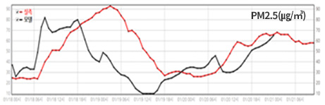

경기도대기환경 진단평가 시스템
관리자
내 정보
로그아웃
일일진단평가
대기정보
기상현황
모델링결과
사이트맵
햄버거 메뉴
모델링결과
공간분포
과학원 모델결과
모델간 비교
시계열
일평균 시계열
연직단면
기여도
종합기여도
정합도분석
시계열
처음
모델링결과
시계열
물질별 시계열
기상별 시계열
검색
모델
모델(CMAQ)
선택
00UTC
기간
~
조회
1D
현재
1D
시군별 선택버튼
경기도
남부권
안성시
여주시
이천시
평택시
중부권
과천시
광명시
군포시
부천시
수원시
시흥시
안산시
안양시
오산시
의왕시
화성시
북부권
고양시
김포시
동두천시
양주시
연천군
의정부시
파주시
포천시
동부권
가평군
광주시
구리시
남양주시
성남시
양평군
하남시
시계열 그래프
시계열 그래프
